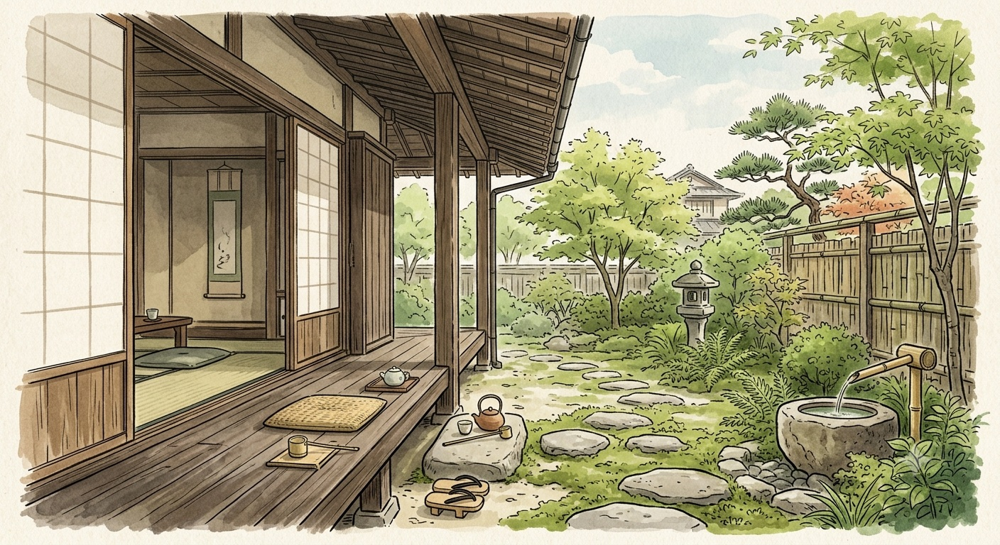
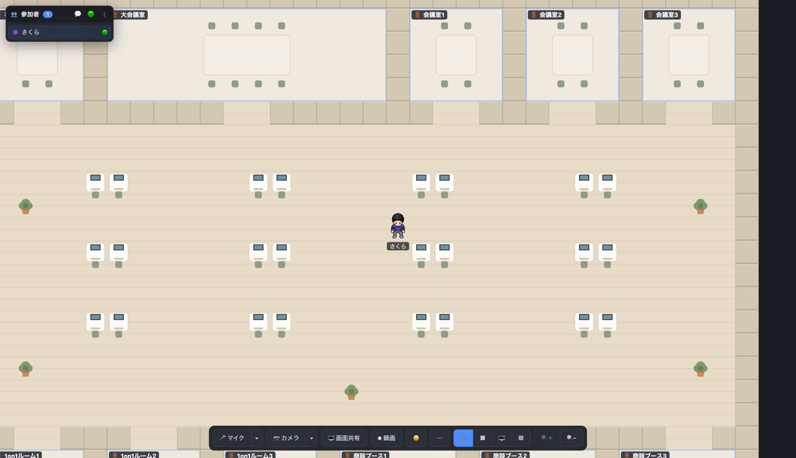
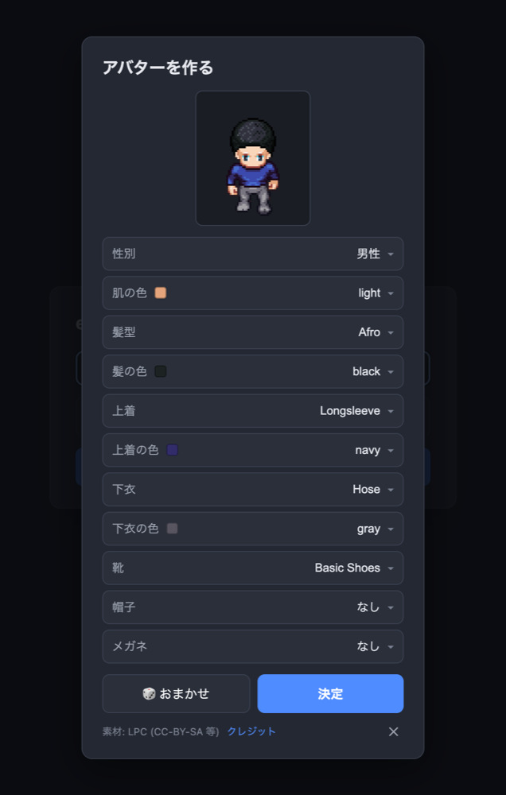

ばったり会って、ちょっと話す。
Bump into someone.
Just start talking.
engawa（縁側）は、ブラウザだけで使えるバーチャルオフィス。2Dマップでアバターを動かし、誰かに近づくと音声・ビデオ・画面共有が自動でつながります。離れれば、自然と切れる。 engawa is a virtual office that runs entirely in the browser. Move your avatar around a 2D map — walk up to a colleague and voice, video, and screen-share connect automatically. Step away and they quietly disconnect.

縁側は、家の内と外のあいだにある板の間。ENGAWA · 縁側
用がなくても腰掛けられて、通りかかった人となんとなく言葉を交わす——そんな場所でした。
リモートワークで失われがちな「ばったり会って、ちょっと話す」を、画面の中に取り戻したい。 An engawa is the wooden veranda between the inside and the outside of a traditional Japanese house.
A place you could sit without any particular reason, and trade a few words with whoever happened to pass by.
engawa brings that back to the screen — the casual run-ins that remote work quietly takes away.
画面は、こんな感じ。 Here's the actual app.
2D のオフィスフロア。デスクや会議室ゾーンが並び、アバターで自由に歩き回れます。 A 2D office floor — desks and meeting-room zones you roam as your avatar.

近づくだけで、つながる。 Get closer, and you're connected.
Slack のハドルや Gather.town のような「ちょっと話しかける」体験を、軽く。 The "just say hi" feeling of a Slack huddle or Gather.town — made light.
近接音声通話Proximity voice
一定距離まで近づくと自動で音声がつながり、離れると自動で切れる。 Voice connects automatically as you approach, and drops as you leave.
ビデオ通話Video
カメラ ON で顔出し。話している人の枠がふわっと光る。 Turn on your camera. The active speaker's frame gently glows.
画面共有Screen share
ワンクリックで共有。小窓・サイド・全画面を切り替え。 Share in one click. Switch between inset, side panel, and full screen.
録画Recording
フロア＋画面共有＋全カメラ＋全員の音声をブラウザ上で合成して録画。 Record the floor, shares, every camera and everyone's audio — composited in the browser.
アバターAvatars
髪型・服・肌の色まで、自分だけのドット絵アバターを作れる。 Build your own pixel-art avatar — hair, clothes, skin tone and more.
ステータスStatus
オンライン / 取り込み中 / 離席中 を切り替えて意思表示。 Show whether you're online, busy, or away.
大人数対応Scales up
会議室ゾーンや5人以上の集まりは、自動で SFU 配信に切り替え。 Meeting rooms and clusters of 5+ switch to SFU delivery automatically.
アプリとして常駐Installable (PWA)
Chrome / Edge にインストールして、独立ウィンドウで起動できる。 Install on Chrome / Edge and launch it in its own window.

アバターは、自分でつくる。 Design your own avatar.
性別・肌の色・髪型・服・帽子・メガネまで細かく。ドット絵は LPC（Liberated Pixel Cup）の素材を使い、思い思いの姿で縁側に座れます。 Tune gender, skin tone, hair, clothes, hats and glasses. The pixel art is built on LPC (Liberated Pixel Cup) — so everyone shows up as their own character.
メディアは、
engawa を経由しない。
Your media never
touches our server.
音声・映像・画面共有は WebRTC の P2P、または Cloudflare Realtime SFU で直接つながります。engawa のサーバーがやるのは「出会いの仲介」と「位置の同期」だけ。だから軽くて、低コスト。 Voice, video and screen-share connect directly over WebRTC P2P — or via Cloudflare Realtime SFU for bigger groups. engawa's own server only brokers introductions and syncs positions. That's what keeps it light and cheap.
-
1
出会いの仲介だけOnly the introductions
誰と誰が近いかを判断し、WebRTC のシグナリングを中継する。 It figures out who's near whom and relays WebRTC signaling.
-
2
メディアは P2P / SFUMedia goes P2P / SFU
実際の音声・映像は端末どうし、または Cloudflare を直接通る。 The actual audio/video flows peer-to-peer, or straight through Cloudflare.
-
3
状態を持たないStateless by design
DB 不要。再起動すればまっさらに戻る、シンプルなサーバー。 No database. A simple server that resets clean on restart.
すぐに、動かせる。 Up and running in minutes.
オープンソース。Docker で起動して、リバースプロキシで HTTPS を終端するだけ。特定ホスティングに縛られません。 Open source. Bring it up with Docker and terminate HTTPS at your own reverse proxy. No hosting lock-in.
# クローンしてclone, then cp .env.example .env make up # → https://engawa.localhost
素材への感謝Built on great art
LPC
アバターのドット絵は Liberated Pixel Cup の素材を使用。作者・出典はリポジトリの CREDITS.csv に個別に記録しています。 Avatar pixel art from the Liberated Pixel Cup. Each part's author and source is logged in the repo's CREDITS.csv.
CC-BY-SA 3.0 ほか / et al.Kenney — Roguelike Indoors
オフィスのマップタイルは Kenney の素材を使用しています。 The office map tiles come from Kenney's asset packs.
CC0※ これらの素材ライセンスは、engawa 本体コードのライセンスとは分離して扱います。 Asset licenses are handled separately from the engawa application code.